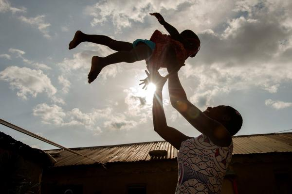

We are impatient optimists working to reduce inequity
About the Founder
Mr Jibril Abdullahi Aduojo (born 17 August, 1970, Egume) is the
Chairman, Farin Group of Businesses. He is also a former Governor of
Kogi state, a former Minister of Science and Technology in Nigeria,
former Director, Nigerian Ports Authority, former President, Grow
Africa, a member of the United Nations board of directors, as well as
the the Chairman, Best Hearts Foundation.
Mission
Guided by the belief that every life has equal value, the Best Hearts
Foundation works to help all people lead healthy, productive lives. In
developing countries, it focuses on improving people's health and
giving them the chance to lift themselves out of hunger and extreme
poverty.
Vision
Best Heart Foundation stands ready to help – near and far. From an
international child who needs a nourishing meal and school supplies,
to grandparents who are raising their grandchildren on a fixed income,
or military family trying to make ends meet while a parent is
deployed, we are unwavering in our dedication to helping our neighbors
and building caring communities. As we embark on the next five years
in our history, we are inspired, and we remain committed to doing our
part to create a world where no child goes to bed hungry.

Members and Philantopists
Mr Jibril Abdullahi Aduojo (born 17 August, 1970, Egume)
is the Chairman, Farin Group of Businesses. He is also a former
Governor of Kogi state, a former Minister of Science and
Technology in Nigeria, former Director, Nigerian Ports
Authority, former President, Grow Africa, a member of the United
Nations board of directors, as well as the the Chairman,
Best Hearts Foundation. He rose to the top at a very
young age which earned him many awards for his hardwork and
dedication. He has been through thick and thin, starting from
scratch all the way to the top. He is currently being ranked as
one of the most influential men in Africa. His history through
poverty made him start a foundation (Best Hearts Foundation) in
order to guide and support young generations through heir growth
and developments. He founded this Non Governmenatal
Organisiation in 2014.
- Jibril Abdullahi Aduojo
Muhammadu Buhari GCFR (born 17 December 1942, Daura) is a
Nigerian politician currently serving as the President of
Nigeria, in office since 2015. Buhari is a retired military
general of the Nigerian Army and previously served as military
head of state from 1983 to 1985, after taking power in a
military coup d'état.
- Muhammadu Buhari
Tony O. Elumelu is an entrepreneur and a philanthropist. The
chairman of Heirs Holdings, United Bank for Africa Plc and
Transcorp Nigeria Plc. In his early career, he made a name for
himself by turning the nearly bankrupt Standard Trust Bank into
a top-five player in Nigeria.
- Tony Elumelu
William Henry Gates III (born October 28, 1955) is an American
business magnate, software developer, investor, and
philanthropist. He is best known as the co-founder of Microsoft
Corporation. He is one of the best-known entrepreneurs and
pioneers of the microcomputer revolution of the 1970s and 1980s.
- Bill Gates
Alhaji Aliko Dangote GCON (born 10 April 1957) is a Nigerian
businessman and philanthropist who is the founder and chairman
of Dangote Group, an industrial conglomerate in Africa. As of
May 29, 2020 he is the 162nd wealthiest person in the world and
the richest person in Africa.
- Aliko Dangote
Chief Michael Adeniyi Agbolade Ishola Adenuga Jr,
GCON (born 29 April 1953) is a Nigerian billionaire businessman,
and the third richest person in Africa. His company Globacom is
Nigeria's second-largest telecom operator, which has a presence
in Ghana and Benin.
- Mike Adenuga
Femi Otedola (born 4 November 1962) is a Nigerian businessman,
philanthropist, and former chairman of Forte Oil PLC, an
importer of fuel products. ... He has recently invested in power
generation as part of the liberalisation of the sector in
Nigeria.
- Femi Otedola
Ngozi Okonjo-Iweala (born 13 June 1954, Ogwashi-Ukwu) is a
Nigerian-born economist and international development expert.
Previously, Okonjo-Iweala spent a 25-year career at the World
Bank as a development economist, scaling the ranks to the Number
2 position of Managing Director, Operations (2007-2011). She
also served two terms as Finance Minister of Nigeria (2003-2006,
2011-2015) under the leadership of President Olusegun Obasanjo
and President Goodluck Jonathan respectively. She sits on the
Boards of Standard Chartered Bank, Twitter, Global Alliance for
Vaccines and Immunization (GAVI), and the African Risk Capacity
(ARC).
- Ngozi Okonjo-Iweala
Folorunso Alakija (born 15 July 1951) is a Nigerian billionaire
businesswoman. She is involved in the fashion, oil, real estate
and printing industries. She is the group managing director of
The Rose of Sharon Group which consists of The Rose of Sharon
Prints & Promotions Limited, Digital Reality Prints Limited and
the executive vice-chairman of Famfa Oil Limited. She also has a
majority stake in DaySpring Property Development company.
Alakija is ranked by Forbes as the richest woman in Nigeria. As
of 2015, she is listed as the second most powerful woman in
Africa after Ngozi Okonjo-Iweala and the 87th most powerful
woman in the world by Forbes.
- Folorunsho Alakija
Godwin Emefiele is a Nigerian economist who has been serving as
the Governor of the Central Bank of Nigeria since June 4,
2014.[2] Born on August 1961 in Lagos State, Nigeria, Emefiele
is originally from Ika South, Delta State.
- Godwin Emefiele
Muhammadu Sanusi II (Sanusi Lamido Sanusi; born 31 July 1961)
was the 14th Emir of Kano from the Fulani Sullubawa clan. Prior
to his accession, Sanusi was an economist and banker. He served
as the Governor of the Central Bank of Nigeria from 2009 to
2014.